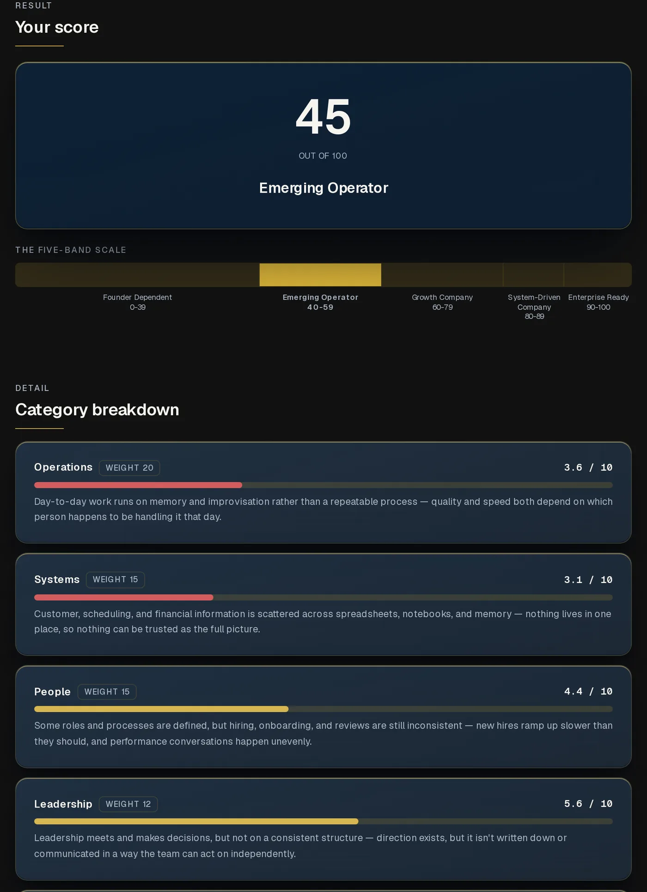

Discuss your results and goals with VERUS. No paid build starts from the scan.
COMPASS / BUSINESS RESULTS↗

ABusiness score and category results.Actual COMPASS interface · Full Assessment demo data
CONFIRM THE PRIORITIES
Diagnose
Discovery conversation, then full assessment
We review your scan and goals in a discovery conversation. If there is a fit, you can proceed to the paid Full Business Assessment before considering a build.
$2,500Full Business AssessmentA separate paid engagement after discovery.
YOUR ROLE
Share your goals and business information. Pay for and complete the full assessment.
VERUS DELIVERS
A comprehensive diagnosis, ranked bottlenecks, and recommended implementation priorities.
NEXT: REVIEW THE PROPOSAL
Review the assessment findings and proposed scope before deciding on a build.